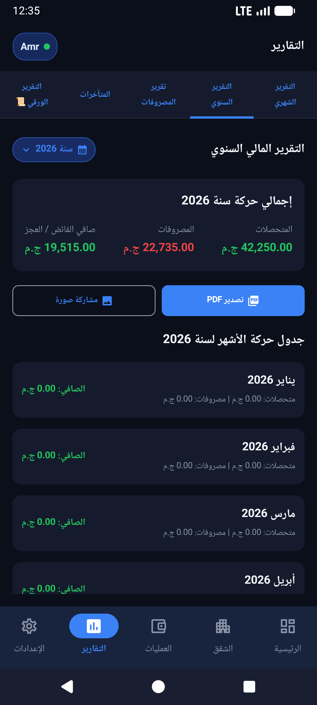

تقارير مالية شاملة، سجل عمليات كامل، وتصدير PDF وإكسيل بضغطة واحدة
كلما اقترب موعد الجمعية العمومية أو اجتماع ملاك العمارة، يشعر المسؤول بالقلق من تجهيز الحسابات وتجميع الأرقام. تطبيق صندوق العمارة يقوم بتوليد التقارير المالية الشهرية والسنوية آلياً، موضحاً الإيرادات والمصروفات والأرصدة والمتأخرات، مع إمكانية التصدير كملف PDF رسمي أو شيت Excel للمراجعة.

واجهة التقارير الدورية وسجل العمارة المالي الشامل
لماذا تفشل الدفاتر الورقية في توثيق حسابات العمارة؟
- عرضة للتلف والضياع: قد ينسكب فنجان قهوة أو تضيع إحدى الكراسات فتضيع معها حسابات سنوات كاملة من أموال الجيران.
- صعوبة المراجعة والتدقيق: للبحث عن حركة دفع تمت قبل 6 أشهر، يضطر أمين الصندوق لتقليب عشرات الصفحات الورقية.
- غياب الشفافية الفورية: لا يستطيع السكان الاطمئنان إلى موقف الصندوق إلا بعد ساعات من الجرد والجمع اليدوي المعرض للخطأ البشري.
مع تطبيق صندوق العمارة، يتحول هاتفك إلى خزانة محاسبية مؤمنة تسجل التاريخ، الوقت، الصنف، والمبلغ لكل قرش يدخل أو يخرج.
أنواع التقارير المتوفرة داخل التطبيق
تقرير الإيرادات والمصروفات الشهري
كشف حساب مفصل لشهر معين يوضح مجموع الاشتراكات المحصلة، إجمالي المصروفات، والصافي المتبقي.
تقرير الموقف السنوي العام
ملخص شامل للسنة المالية للعمارة، يوضح الرصيد الافتتاحي، حركة الشهور الـ 12، ورصيد الإغلاق.
كشف حساب متأخرات الشقق
جدول يوضح حالة كل وحدة سكنية: الشهور المسددة، الشهور المتأخرة، وإجمالي المبالغ المطلوبة منها.
سجل العمارة اليومي (Ledger)
عرض زمني دقيق لكل حركة مالية مسجلة بالتاريخ والنوع والخزينة، مع إمكانية الفلترة والبحث.
تصدير احترافي ومشاركة سهلة
لأن مشاركة الحسابات هي جوهر الثقة، يدعم التطبيق:
- تصدير بصيغة PDF: ملفات منسقة وجاهزة للطباعة الورقية أو المشاركة كملف مستند في مجموعة واتساب الخاصة بالعمارة.
- تصدير بصيغة Excel (XLSX): يتيح لك فتح البيانات على جهاز الكمبيوتر لإجراء تحليلات إضافية أو أرشفتها في ملفاتك الخاصة.
- العمل بدون إنترنت (Offline-First): يمكنك استخراج التقارير والاطلاع عليها حتى لو كنت في جراج العمارة أو مكان بدون شبكة إنترنت.
جاهز لتقديم تقارير مالية تفخر بها أمام الجيران؟
حوّل إدارة عمارتك إلى نموذج للشفافية والانضباط المالي المحترف.